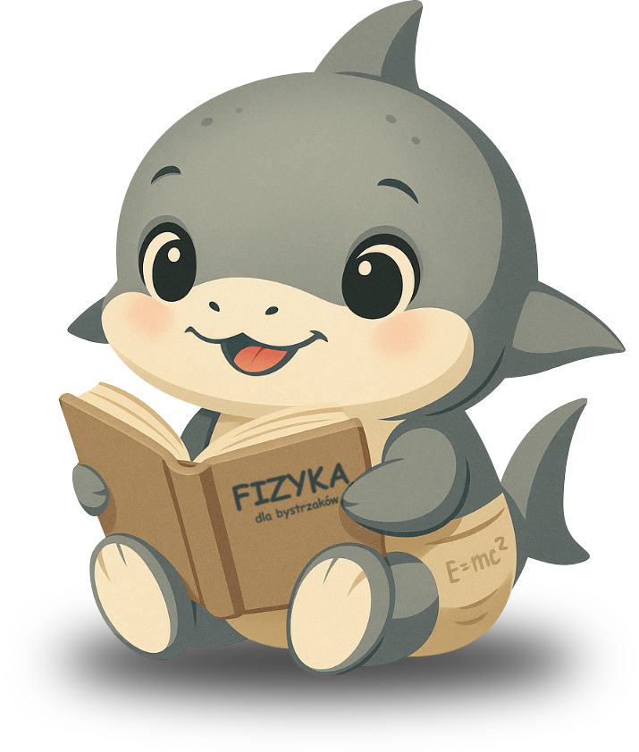
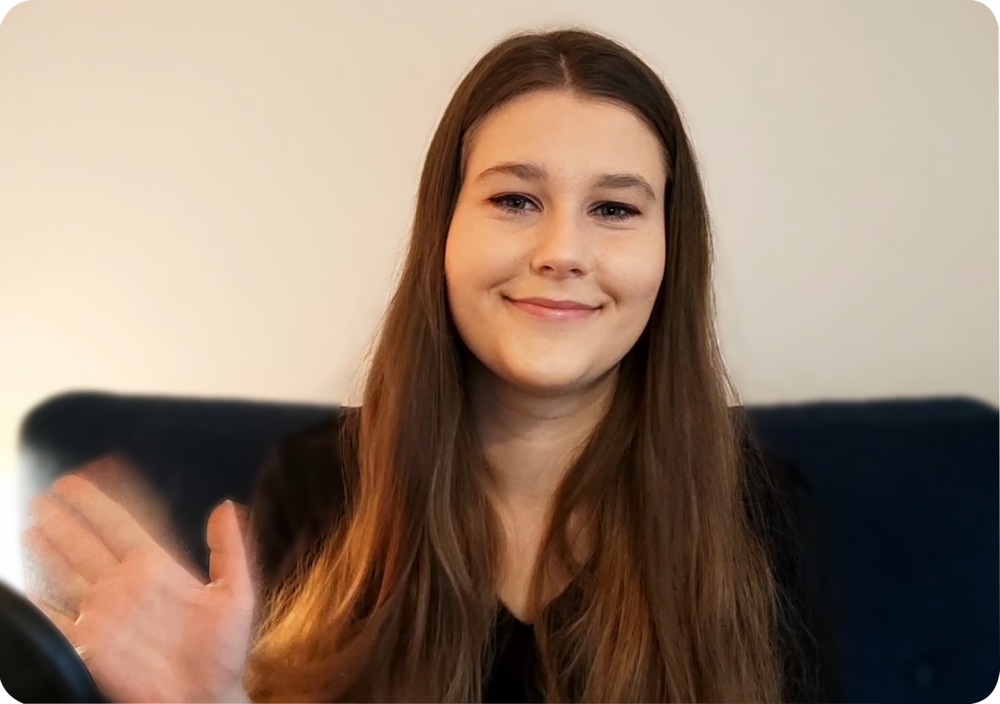

Zapraszam, jeśli chcesz postawić na ciekawe zajęcia, oparte na zrozumieniu fizyki i uczyć się z Agatą z kanału Rekiny Fizyki.


KTO?
To ja, Agata z kanału Rekiny Fizyki! Oprócz prowadzenia kanału o tematyce maturalno-fizyczno-popularnonaukowej, moim głównym zajęciem jest robienie doktoratu z fizyki teoretycznej na Uniwersyteci Warszawskim, jestem już na czwartym roku. Bardzo lubię uczyć i bawić się fizyką. MiniCV:
skończyłam fizykę indywidualną i kierunek Physics na UW
jestem finalistką Olimpiady Fizycznej i Turnieju Młodych Fizyków
prowadzę zajęcia dla studentów Wydziału Fizyki UW
jestem jurorką na Miedzynarodowym Turnieju Młodych Fizyków
prowadzę warsztaty Krajowego Funduszu na Rzecz Dzieci
Zapraszam na korepetycje ze mną (w tym roku tylko grupowe)!
CO I JAK?
W tym roku ruszamy z kursem do matury z fizyki! Mamy wspólny Discord, gdzie wszelkie żywe dyskusje o fizyce są mile widziane. Tam również raz w tygodniu spotykamy się na około 1,5 godziny na korepetycjach. Idea jest taka, żeby jak najbardziej zaangażować ucznia w proces jego własnego uczenia się, aby jedno proste zadanie - zrozumienie fizyki - wystarczyło do ogarnięcia całej matury. Stosuję do tego m.in. dialog sokratejski, quizy, grywalizację, kreatywne zadania domowe. Będziemy też robić tyle doświadczeń na ile pozwala forma zajęć online. Wszelkie szczegóły będą dopracowywane w czasie roku (bo to pierwszy rok kursu) i jestem otwarta na propozycje! Termin pierwszej grupy to sobota 10:00.
Zobacz jak uczę i stosuję (jak mi się zdaje dość) nietuzinkowe podejście do procesu nauki na moim YouTube Rekiny Fizyki. Robię tam też czasem bardziej popularnonaukowe rzeczy.